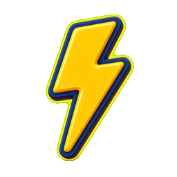
Mission 02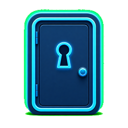
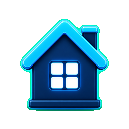
ראה את האנלוגיה המלאה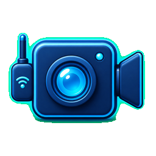
סרטון מבואמה נגלה היום
חלק 1
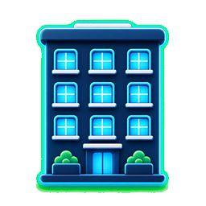
כתובת הבניין = כתובת IP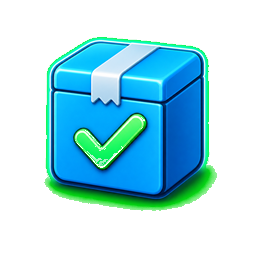
חבילה לדייר ספציפי = מידע לאפליקציהלחצו לפרטים
חלק 2
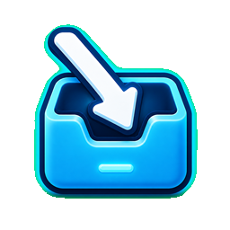
שרת עונה → "כן, מחובר!"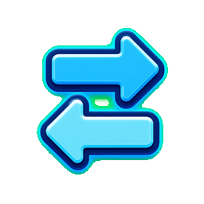
העברת נתונים → עם אישור לכל חבילה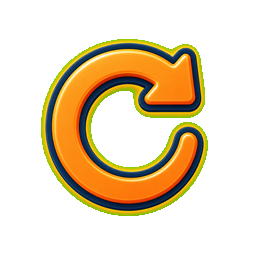
אם נאבד → שולחים שוב אוטומטית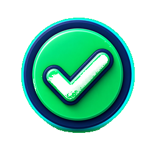
יתרונות אמין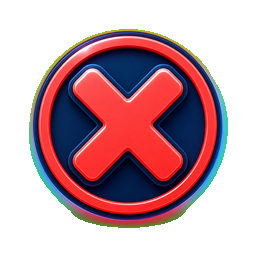
חסרונות איטי יותר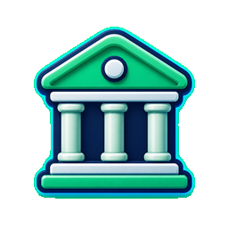
בנקאותחלק 3
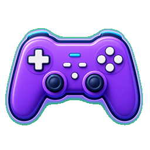
משחקי רשת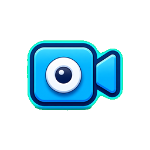
Zoom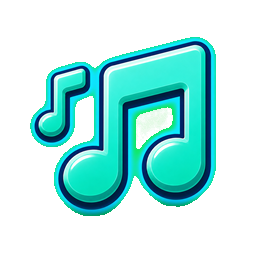
Spotify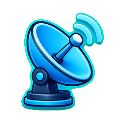
Direct TV| תכונה | TCP | UDP |
|---|---|---|
| אמינות | גבוהה | נמוכה |
| מהירות | איטי יותר | מהיר |
| בדיקת קבלה | כן ✓ | לא ✗ |
| מתאים ל | אתרים · קבצים | משחקים · שיחות |
חלק 4
סיכום